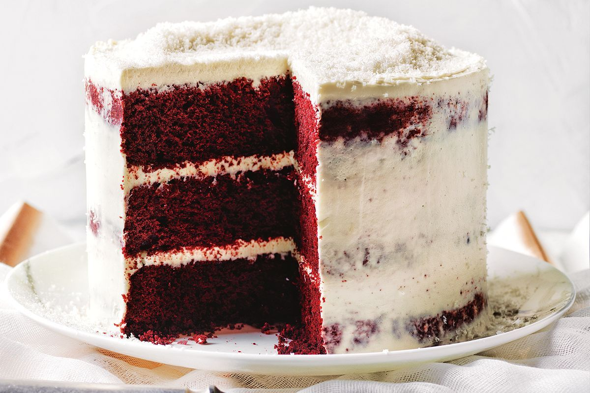

Red Velvet Cake
Ingredients
- For Cake
- 3 cups (360g) cake flour (spooned & leveled)
- 1 teaspoon baking soda
- 2 Tablespoons (10g) unsweetened natural cocoa powder
- 1/2 teaspoon salt
- 1/2 cup (8 Tbsp; 113g) unsalted butter, softened to room temperature
- 2 cups (400g) granulated sugar
- 1 cup (240ml) canola or vegetable oil
- 4 large eggs, room temperature and separated
- 1 Tablespoon pure vanilla extract
- 1 teaspoon distilled white vinegar
- liquid or gel red food coloring
- 1 cup (240ml) buttermilk, at room temperature
- For Cream Cheese Frosting
- 16 ounces (452g) full-fat brick cream cheese, softened to room temperature
- 3/4 cup (12 Tbsp; 170g) unsalted butter, softened to room temperature
- 5 cups (600g) confectioners’ sugar
- 1 and 1/2 teaspoons pure vanilla extract
- pinch of salt, to taste
Steps
- Preheat oven to 350°F (177°C). Grease two 9-inch cake pans, line with parchment paper rounds, then grease the parchment paper. Parchment paper helps the cakes seamlessly release from the pans.
- Make the cake: Whisk the flour, baking soda, cocoa powder, and salt together in a large bowl. Set aside.
- Using a handheld or stand mixer fitted with a paddle attachment, beat the butter and sugar together on medium-high speed until combined, about 1 minute. Scrape down the sides and up the bottom of the bowl with a rubber spatula as needed. Add the oil, egg yolks, vanilla extract, and vinegar and beat on high for 2 minutes. (Set the egg whites aside.) Scrape down the sides and up the bottom of the bowl with a rubber spatula as needed.
- With the mixer on low speed, add the dry ingredients in 2-3 additions alternating with the buttermilk. Beat in your desired amount of food coloring just until combined. I use 1-2 teaspoons gel food coloring. Vigorously whisk or beat the 4 egg whites on high speed until fluffy peaks form as pictured above, about 3 minutes. Gently fold into cake batter. The batter will be silky and slightly thick.
- Divide batter between cake pans. Bake for 30-32 minutes or until the tops of the cakes spring back when gently touched and a toothpick inserted in the center comes out clean. If the cakes need a little longer as determined by wet crumbs on the toothpick, bake for longer. However, careful not to overbake as the cakes may dry out. Remove cakes from the oven and cool completely in the pans set on a wire rack. The cakes must be completely cool before frosting and assembling.
- Make the frosting: In a large bowl using a handheld or stand mixer fitted with a whisk or paddle attachment, beat the cream cheese and butter together on medium-high speed until smooth, about 2 minutes. Add the confectioners’ sugar, vanilla extract, and a pinch of salt. Beat on low speed for 30 seconds, then increase to high speed and beat for 3 minutes until completely combined and creamy. Add more confectioners’ sugar if frosting is too thin or an extra pinch of salt if frosting is too sweet. Frosting should be soft, but not runny.
- Assemble and frost: Using a large serrated knife, slice a thin layer off the tops of the cakes to create a flat surface. Discard or crumble over finished cake. Place 1 cake layer on your cake stand or serving plate. Evenly cover the top with frosting. Top with 2nd layer and spread remaining frosting all over the top and sides. I always use an icing spatula and bench scraper for the frosting. I used Wilton piping tip #12 for decoration around the top.
- Refrigerate cake for at least 30-60 minutes before slicing. This helps the cake hold its shape when cutting.
- Cover leftover cake tightly and store in the refrigerator for 5 days. Frosted cake or unfrosted cake layers can be frozen up to 2-3 months. Thaw overnight in the refrigerator and bring to room temperature before decorating/serving.
Rate this Recipe??